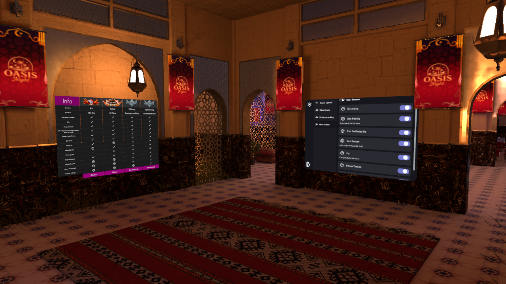

Proyecto VRChat
Hangout / Nightlife
Update / Release 2025
OASIS Night
Mundo social en VRChat con estética de oasis nocturno (bar, lounges, escenario y exteriores). Integra shading con Graphlit (Z3y), mejoras de audio direccional y oclusión, UI de toggles de poderes para controlar interacciones de forma segura, y pantallas públicas con ProTV.

Quick Facts
Category
VRChat Hangout / Nightlife
Role
Creator • Environment + Technical Art • UdonSharp Dev
Tech
Unity 2022 • UdonSharp • ProTV • Graphlit (Z3y)
Timeline
Actualización / release: 2025
Aportes y responsabilidades
- Shading / materiales: integración y ajustes con Graphlit (Z3y) para mantener look premium con foco en performance.
- Audio direccional + oclusión: definición de zonas/occluders y afinación de parámetros para legibilidad sonora en convivencia y eventos.
- UI de poderes (toggles): panel para habilitar/deshabilitar funcionalidades de interacción de forma controlada (usabilidad + seguridad).
- Optimización: ajuste de escena/materiales y pruebas en runtime para mantener estabilidad en zonas principales.
Sistemas / Features
- ProTV: pantallas públicas para contenido multimedia dentro del mundo.
- Power Toggles: activación de capacidades del usuario desde UI (enfoque “safe by design”).
- Directional Audio + Occlusion: control acústico por zonas.
- Graphlit (Z3y): workflow de materiales para entornos amplios.
Nota: más adelante podemos consolidar una sección global “Sistemas / Features” reutilizable para múltiples proyectos (cine, karaoke, vuelo, roles, seguridad anti‑abuso, etc.).
Enlaces
- VRChat — OASIS Night
- Video / gallery: pendiente (si quieres, lo agrego cuando me pases el link).
Métricas (por agregar)
- Draw calls típicos / picos por zona
- VRAM / memoria de texturas (según plataforma)
- Tamaño de descarga / footprint
- FPS objetivo (PCVR / Quest)